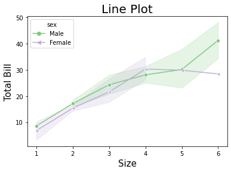
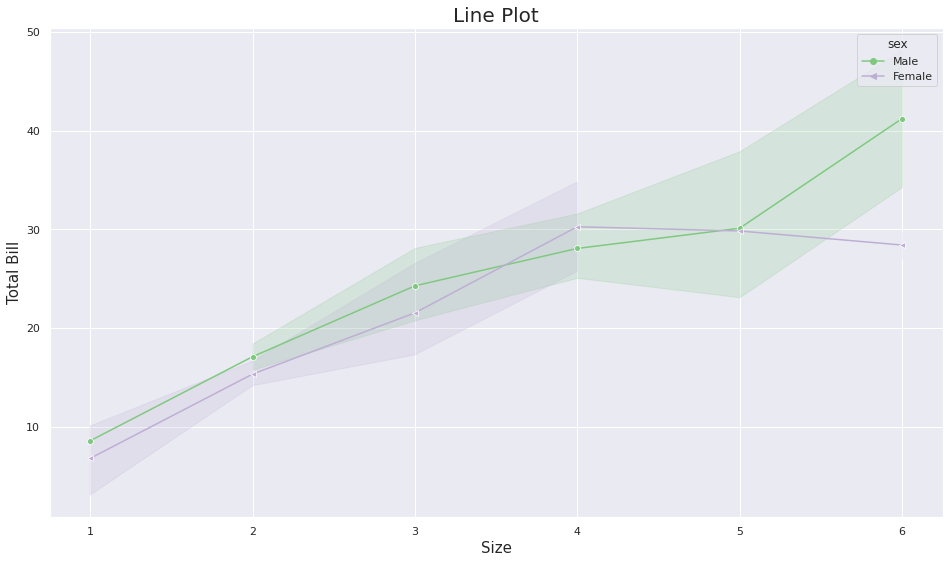

Seaborn¶
pip install seaborn
Collecting seaborn
Downloading seaborn-0.11.1-py3-none-any.whl (285 kB)
?25l
|█▏ | 10 kB 27.2 MB/s eta 0:00:01
|██▎ | 20 kB 32.9 MB/s eta 0:00:01
|███▌ | 30 kB 14.6 MB/s eta 0:00:01
|████▋ | 40 kB 6.1 MB/s eta 0:00:01
|█████▊ | 51 kB 7.2 MB/s eta 0:00:01
|███████ | 61 kB 7.8 MB/s eta 0:00:01
|████████ | 71 kB 8.0 MB/s eta 0:00:01
|█████████▏ | 81 kB 8.4 MB/s eta 0:00:01
|██████████▍ | 92 kB 8.1 MB/s eta 0:00:01
|███████████▌ | 102 kB 7.1 MB/s eta 0:00:01
|████████████▋ | 112 kB 7.1 MB/s eta 0:00:01
|█████████████▉ | 122 kB 7.1 MB/s eta 0:00:01
|███████████████ | 133 kB 7.1 MB/s eta 0:00:01
|████████████████ | 143 kB 7.1 MB/s eta 0:00:01
|█████████████████▎ | 153 kB 7.1 MB/s eta 0:00:01
|██████████████████▍ | 163 kB 7.1 MB/s eta 0:00:01
|███████████████████▌ | 174 kB 7.1 MB/s eta 0:00:01
|████████████████████▊ | 184 kB 7.1 MB/s eta 0:00:01
|█████████████████████▉ | 194 kB 7.1 MB/s eta 0:00:01
|███████████████████████ | 204 kB 7.1 MB/s eta 0:00:01
|████████████████████████▏ | 215 kB 7.1 MB/s eta 0:00:01
|█████████████████████████▎ | 225 kB 7.1 MB/s eta 0:00:01
|██████████████████████████▍ | 235 kB 7.1 MB/s eta 0:00:01
|███████████████████████████▋ | 245 kB 7.1 MB/s eta 0:00:01
|████████████████████████████▊ | 256 kB 7.1 MB/s eta 0:00:01
|██████████████████████████████ | 266 kB 7.1 MB/s eta 0:00:01
|███████████████████████████████ | 276 kB 7.1 MB/s eta 0:00:01
|████████████████████████████████| 285 kB 7.1 MB/s
?25hRequirement already satisfied: pandas>=0.23 in /opt/hostedtoolcache/Python/3.7.10/x64/lib/python3.7/site-packages (from seaborn) (1.2.5)
Requirement already satisfied: numpy>=1.15 in /opt/hostedtoolcache/Python/3.7.10/x64/lib/python3.7/site-packages (from seaborn) (1.21.0)
Requirement already satisfied: scipy>=1.0 in /opt/hostedtoolcache/Python/3.7.10/x64/lib/python3.7/site-packages (from seaborn) (1.7.0)
Requirement already satisfied: matplotlib>=2.2 in /opt/hostedtoolcache/Python/3.7.10/x64/lib/python3.7/site-packages (from seaborn) (3.4.2)
Requirement already satisfied: pillow>=6.2.0 in /opt/hostedtoolcache/Python/3.7.10/x64/lib/python3.7/site-packages (from matplotlib>=2.2->seaborn) (6.2.2)
Requirement already satisfied: cycler>=0.10 in /opt/hostedtoolcache/Python/3.7.10/x64/lib/python3.7/site-packages (from matplotlib>=2.2->seaborn) (0.10.0)
Requirement already satisfied: pyparsing>=2.2.1 in /opt/hostedtoolcache/Python/3.7.10/x64/lib/python3.7/site-packages (from matplotlib>=2.2->seaborn) (2.4.7)
Requirement already satisfied: kiwisolver>=1.0.1 in /opt/hostedtoolcache/Python/3.7.10/x64/lib/python3.7/site-packages (from matplotlib>=2.2->seaborn) (1.3.1)
Requirement already satisfied: python-dateutil>=2.7 in /opt/hostedtoolcache/Python/3.7.10/x64/lib/python3.7/site-packages (from matplotlib>=2.2->seaborn) (2.8.1)
Requirement already satisfied: six in /opt/hostedtoolcache/Python/3.7.10/x64/lib/python3.7/site-packages (from cycler>=0.10->matplotlib>=2.2->seaborn) (1.16.0)
Requirement already satisfied: pytz>=2017.3 in /opt/hostedtoolcache/Python/3.7.10/x64/lib/python3.7/site-packages (from pandas>=0.23->seaborn) (2021.1)
Installing collected packages: seaborn
Successfully installed seaborn-0.11.1
Note: you may need to restart the kernel to use updated packages.
import seaborn as sns
Lineplot¶
import seaborn as sns
import pandas as pd
import matplotlib.pyplot as plt
'''sns.lineplot(
*,
x=None,
y=None,
hue=None,
size=None,
style=None,
data=None,
palette=None,
hue_order=None,
hue_norm=None,
sizes=None,
size_order=None,
size_norm=None,
dashes=True,
markers=None,
style_order=None,
units=None,
estimator='mean',
ci=95,
n_boot=1000,
seed=None,
sort=True,
err_style='band',
err_kws=None,
legend='auto',
ax=None,
**kwargs,
)'''
"sns.lineplot(\n *,\n x=None,\n y=None,\n hue=None,\n size=None,\n style=None,\n data=None,\n palette=None,\n hue_order=None,\n hue_norm=None,\n sizes=None,\n size_order=None,\n size_norm=None,\n dashes=True,\n markers=None,\n style_order=None,\n units=None,\n estimator='mean',\n ci=95,\n n_boot=1000,\n seed=None,\n sort=True,\n err_style='band',\n err_kws=None,\n legend='auto',\n ax=None,\n **kwargs,\n)"
days = [1,2,3,4,5,6,7,8,9,10,11,12,13,14,15]
temperature = [36.6, 37, 37.7,39,40.1,43,43.4,45,45.6,40.1,44,45,46.8,47,47.8]
temp_df=pd.DataFrame({"days":days,"temperature":temperature})
sns.lineplot(x="days", y="temperature", data=temp_df,)
plt.show()
tips_df=sns.load_dataset("tips")
tips_df
| total_bill | tip | sex | smoker | day | time | size | |
|---|---|---|---|---|---|---|---|
| 0 | 16.99 | 1.01 | Female | No | Sun | Dinner | 2 |
| 1 | 10.34 | 1.66 | Male | No | Sun | Dinner | 3 |
| 2 | 21.01 | 3.50 | Male | No | Sun | Dinner | 3 |
| 3 | 23.68 | 3.31 | Male | No | Sun | Dinner | 2 |
| 4 | 24.59 | 3.61 | Female | No | Sun | Dinner | 4 |
| ... | ... | ... | ... | ... | ... | ... | ... |
| 239 | 29.03 | 5.92 | Male | No | Sat | Dinner | 3 |
| 240 | 27.18 | 2.00 | Female | Yes | Sat | Dinner | 2 |
| 241 | 22.67 | 2.00 | Male | Yes | Sat | Dinner | 2 |
| 242 | 17.82 | 1.75 | Male | No | Sat | Dinner | 2 |
| 243 | 18.78 | 3.00 | Female | No | Thur | Dinner | 2 |
244 rows × 7 columns
tips_df.shape
(244, 7)
sns.lineplot(x='total_bill',y='tip',data=tips_df)
<AxesSubplot:xlabel='total_bill', ylabel='tip'>
sns.lineplot(y='total_bill',x='tip',data=tips_df)
<AxesSubplot:xlabel='tip', ylabel='total_bill'>
sns.lineplot(x='tip',y='size',data=tips_df)
<AxesSubplot:xlabel='tip', ylabel='size'>
sns.lineplot(x='size',y='total_bill',data=tips_df, hue="sex",style="sex",palette="Accent",dashes=False,markers=["o","<"],legend="brief")
plt.title("Line Plot", fontsize = 20) # for title
plt.xlabel("Size", fontsize = 15) # label for x-axis
plt.ylabel("Total Bill", fontsize = 15) # label for y-axis
plt.show()

plt.figure(figsize = (16,9)) # figure size with ratio 16:9
sns.set(style='darkgrid',) # background darkgrid style of graph
# Draw line plot of size and total_bill with parameters
sns.lineplot(x='size',y='total_bill',data=tips_df, hue="sex",style="sex",palette="Accent",dashes=False,markers=["o","<"],legend="brief")
plt.title("Line Plot", fontsize = 20) # for title
plt.xlabel("Size", fontsize = 15) # label for x-axis
plt.ylabel("Total Bill", fontsize = 15) # label for y-axis
plt.show()

plt.figure(figsize = (16,9))
sns.set(style='darkgrid',)
# Draw line plot of size and total_bill with parameters and hue "day"
sns.lineplot(x = "size", y = "total_bill", data = tips_df, hue = "day",
style = "day", palette = "hot", dashes = False,
markers = ["o", "<", ">", "^"], legend="brief",)
plt.title("Line Plot", fontsize = 20)
plt.xlabel("Size", fontsize = 15)
plt.ylabel("Total Bill", fontsize = 15)
plt.show()